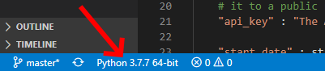

04 Checkpoint: Installing Third-Party Modules
Overview
Use pip to download and install the
requests module. Then verify that requests
was installed correctly and that it works by running a simple
program that uses the requests module to retrieve
commodity prices for wool and oranges.
Helpful Documentation
pip
is a standard Python module that you will use to install the
requests module on your computer.
The requests module
contains functions to send HTTP requests for data to a computer
server on the internet and to read the data that the server
returns.
Assignment
Do the following:
- Download and save this Python program: commodities.py and then open it in VS Code.
- Look near the lower left corner of the VS Code window and verify that a version of Python is shown in the status bar. For example, the following screen shot shows "Python 3.7.7" in the status bar.
- On the menu bar for VS Code, click "Terminal" and then "New Terminal." This will open a terminal frame at the bottom of the VS Code window. A terminal is a window or frame where a user can type and execute computer commands.
- Copy and paste the following command into the terminal frame and execute the command by pressing the Enter key. This command will upgrade
pipand several other parts of the Python installation modules so thatpipwill work correctly.python -m pip install --user --upgrade pip setuptools wheel
- Install the
requestsmodule by copying, pasting, and executing the following command in the terminal frame.python -m pip install --user requests
- Notice at line 21 in the
commodities.pyprogram that you downloaded, there is a string, "The API key is in your I-Learn course." Look in I-Learn in the page that corresponds to this activity and copy the API key and then paste it on line 21 to replace the string, "The API key is in your I-Learn course." - Run the program that you downloaded by clicking the run icon (small green triangle) in the upper right corner of VS Code. If your computer is connected to the internet, the program should run successfully and print prices for Australian wool similar to this:
ODA/PWOOLC_USD Wool; coarse; 23 micron; Australian Wool Exchange spot quote; US cents per kilogram 2019-01-17 2020-01-31 ['Date', 'Value'] ['2019-01-31', 1554.131] ['2019-02-28', 1617.8] ['2019-03-31', 1586.002] ['2019-04-30', 1553.879] ['2019-05-31', 1475.668] ['2019-06-30', 1430.442] ['2019-07-31', 1372.036] ['2019-08-31', 1337.728] ['2019-09-30', 1346.918] ['2019-10-31', 1133.594] ['2019-11-30', 1154.554] ['2019-12-31', 1157.729] ['2020-01-31', 1188.525]
- Examine the
commodities.pyprogram in VS Code and note the following which will help you in the team activity and prove assignment for this lesson:- At line 1, the program imports parts of the standard Python
datetimemodule. - At line 2, the program imports the third-party
requestsmodule. - At lines 4 through 27, the program prepares an HTTP request.
- At line 30, the program uses the requests module to send the HTTP request to a computer server at quandl.com. Notice in the call to
requests.getthat the program is using a named argument, which is namedparams. Named arguments are optional. In this program, the named argumentparamscauses the quandl.com server to filter the data that it will send to the program. - At line 33, the program checks the status_code of the request. A status code of 200 means the request succeeded.
- If the request succeeded, at line 39, the program converts the data that came from the server from JSON data into a dictionary.
- At lines 43 through 48, the program prints the data that was returned by quandl.com from the request.
- Try to appreciate how simple this Python program is and how easy it is to retrieve data from a remote computer server using the
requestsmodule. In other programming languages and even with other Python modules, retrieving data from a server is substantially more complex and difficult.
- At line 6 of the program, change the
qcodevariable from"ODA/PWOOLC_USD"to"ODA/PORANG_USD". Then run the program again by clicking the run icon (small green triangle). The program should print prices for oranges in the U.S.
Submission
When complete, report your progress in the associated I-Learn quiz.